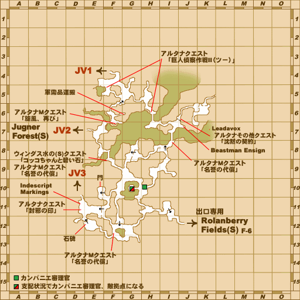

Before you begin
- Complete Claws of the Griffon and the Back to the Beginning mission; Cait Sith should be active or later.
Starting point
Raustigne · Southern San d'Oria (S) · I-7
Walkthrough
- Speak to Raustigne at I-7, then Rholont at E-7.
- In Vunkerl Inlet (S), examine the ??? north of the bridge at H-6 for the Vunkerl Herb Memo and quest acceptance.
- At Ludiwa Spring F-5, examine the Leafy Patch. Choose the color matching the Vana’diel time when picking: red 00:00–07:59, blue 08:00–15:59, green 16:00–23:59.
- Return to the H-6 ??? with the herb. A correctly picked herb completes the quest; if rejected, collect the correct replacement.
Battle and progress notes
- The picking time determines the correct color; delivery time does not. No battle is required.
Completion and reward
What this opens
Area maps
Open a zone below, then select a map to enlarge it. Match the named floors and grid coordinates in the steps; these are reference area maps, not a live position tracker.
Southern San d'Oria (S)


Vunkerl Inlet (S)


Zone guides
References
Steps are an original summary of the linked walkthrough and reviewed source. Other servers’ bonus rewards are not included. How to read requirements, waits and battlefield notes.